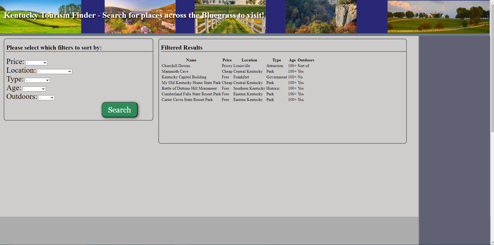
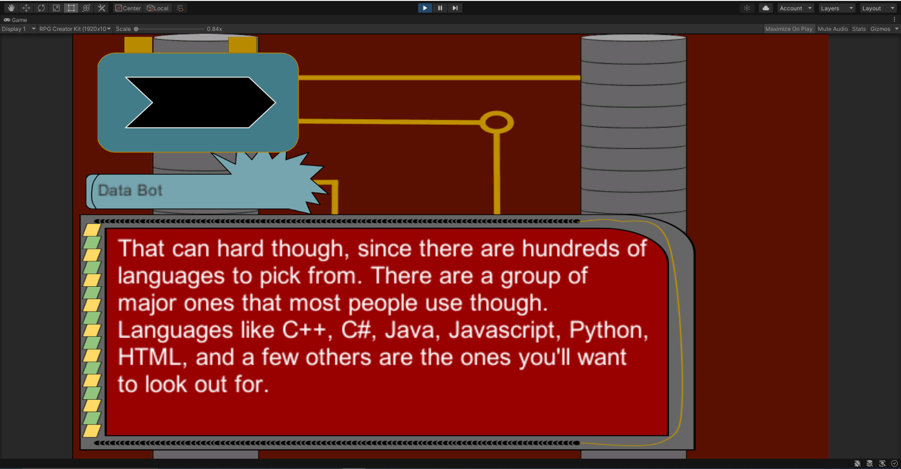
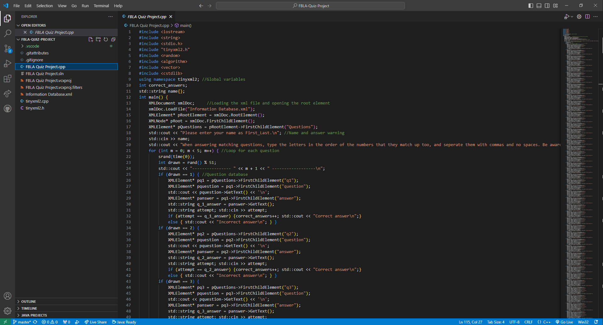
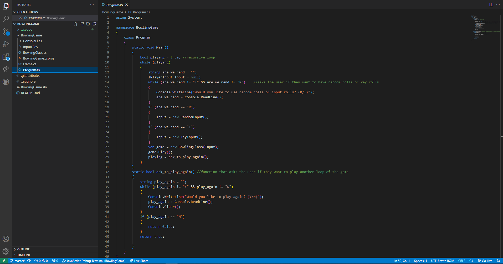
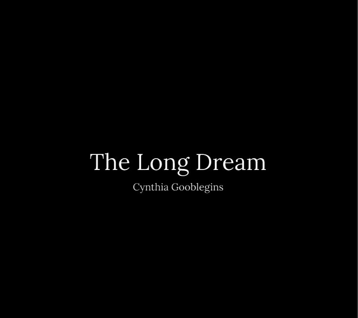
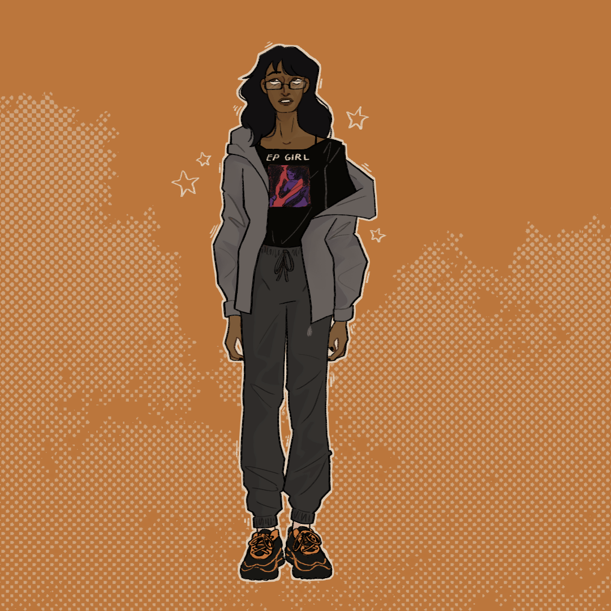
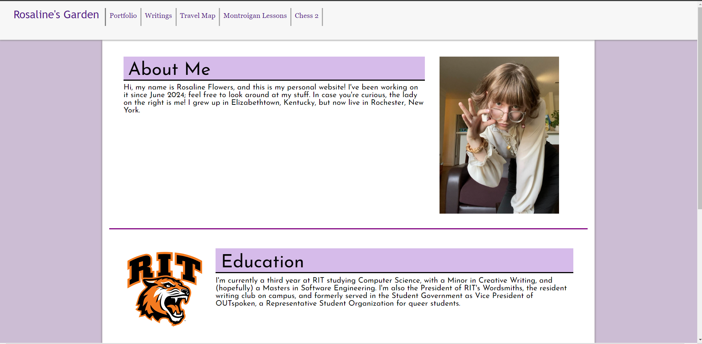

Kentucky Tourism Site
A project I worked on for the Future Business Leaders of America's
Coding and Programming Event. This was my first time making a website, and I had
to learn a lot of it on the fly during the roughly month and half long development process.
The idea was to create a tourism website for my home state, and looking back it was a
pretty scuffed job. Regardless, I learned a lot, and ended up placing 2nd in state!
Github link can be found
here.

CAC Project
A small game I created in Unity for the Congressional App Challenge, which
was a little educational program teaching the basics of programming. It wasn't my
first time using Unity, but it still wasn't a fantastic end product, partially because
of the short development time- roughly 3 weeks- but also because of my lack of
expertise in asset design. All the art for the game was made in Google Images,
and not very well. Link to the repo is
here.

FBLA Quiz
Another program made for FBLA's Coding and Programming Competition, just for the
year prior. This one was a text-based endeavor testing the FBLA related
knowledge of the user, then receiving a score. The scores could be saved, and
users would have "profiles" tracking their scores. Repo link is
here.

Bowling Sim
A text-based sim project I made when I first started working as a Software
Engineering Intern at Venminder while in high school. The project was
intended show what I knew already, and be taught some new information that
would be relevent to the position. The sim had two input modes, and would
track and display user scores. GitHub is
here.

The Long Dream
A writing project this time, this is (technically) my first published work
of literature! It was an in-character piece, an autobiography and manifesto
for my character in Stoneworks, a Minecraft nation roleplaying server.
Its relatively short, so if you're interested, the link is
here,
though be warned that it is a little hard to follow if you're missing context.

Metallurgy Toque
Another piece of writing too long for the website, Metallurgy Toque is a novel length
work- my most arduous and complete so far. The story follows Savita, the young owner
of a restaurant and wielder of unique abilities branded into her, and her escapades
with a group of vigilantes intent on bringing down those who impose powers like hers
onto others. My beta reading list is on a request basis, so if you're interested,
message me.

This Website!
Wow! What do you know? This website is also a showcase of my prowess, so if you're
curious about what I can do, then stop reading and start poking around.
